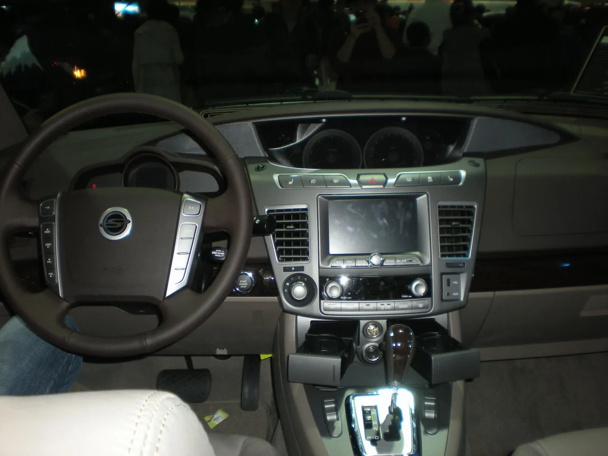

▲ 쌍용 코란도 투리스모 — 2013년부터 2019년까지 판매된 대형 MPV로, 최근 중고차 시장에서 700만원대 매물이 주목받고 있다
쌍용자동차(현 KG모빌리티)가 2013년 2월부터 2019년 7월까지 판매했던 대형 MPV, 코란도 투리스모가 최근 중고차 시장에서 다시 화제입니다. 단종된 지 6년이 넘었지만, 9인승 4WD 구성에 700만원대라는 가격이 맞물리면서 "이걸 왜 이제 알았을까"라는 반응이 나오고 있습니다.
1. 왜 "렉스턴과 카니발을 합쳤다"고 할까
이 표현이 나오는 이유는 명확합니다. 코란도 투리스모는 쌍용의 SUV 렉스턴과 플랫폼을 공유하는 바디온프레임 구조를 기반으로 하면서도, 차체는 9인승까지 태울 수 있는 대형 MPV로 만들어졌습니다. 즉 렉스턴급의 오프로드 감성과 프레임 강성을 갖추면서도, 카니발처럼 다인승 패밀리카로 쓸 수 있는 흔치 않은 조합입니다. 여기에 4WD까지 기본으로 갖추고 있어, 험로나 눈길 주행이 잦은 소비자들에게는 특히 매력적인 선택지로 꼽힙니다. 국내 대형 MPV 시장에서 이런 프레임 기반·4WD 조합은 사실상 코란도 투리스모가 유일하다시피 했습니다.
▲ 쌍용 코란도 투리스모 2018년 2차 페이스리프트 — 단종 직전까지 꾸준히 개선을 거치며 완성도를 높였다
2. 스펙으로 보는 실사용성
9인승 4WD 기준 스펙을 보면, e-XDi220 LET 디젤 엔진이 2,157cc 배기량에서 178마력(4,000rpm)과 최대토크 40.8kgf·m(1,400~2,800rpm)을 냅니다. 저속에서부터 두툼한 토크가 나오는 디젤 엔진 특성상, 다인승으로 무겁게 채워 타도 힘이 부족하다는 느낌은 적은 편입니다. 변속기는 7단 자동이 맞물리고, 공차중량은 2,280kg으로 상당히 묵직한 축에 속합니다. 연비는 복합 10.1km/L(도심 9.1km/L, 고속도로 11.6km/L)로 요즘 기준으로는 낮은 편이지만, 애초에 이 차를 찾는 소비자들은 연비보다 다인승·4WD 조합 자체에 가치를 두는 경우가 많습니다.

▲ 쌍용 코란도 투리스모 실내 — 단종된 차량이지만 당시 기준으로는 센터 디스플레이 등 편의 사양을 갖추고 있었다
3. 700만원대, 어떻게 가능한가
현재 중고차 시장에서 코란도 투리스모는 600만원대부터 1,000만원대까지 폭넓게 거래되고 있으며, 이 가운데 700만원대 매물이 특히 관심을 받고 있습니다. 단종된 지 오래된 차량인 만큼 감가가 상당 부분 진행된 상태이고, 연식·주행거리·상태에 따라 가격 편차가 큰 편입니다. 다만 대형 MPV·4WD·디젤이라는 조합 자체가 요즘 신차 시장에서는 거의 사라진 구성이라, 이 스펙을 원하는 소비자라면 중고차 외에는 사실상 대안이 마땅치 않다는 점이 이 차가 재조명받는 배경으로 꼽힙니다.
| 항목 | 사양 |
|---|---|
| 엔진 | e-XDi220 LET 디젤 2,157cc |
| 최고출력 | 178마력(4,000rpm) |
| 최대토크 | 40.8kgf·m(1,400~2,800rpm) |
| 변속기·구동방식 | 자동 7단, 4WD |
| 복합연비 | 10.1km/L |
| 중고 시세 | 600만~1,000만원대(700만원대 주목) |

▲ 중고차 매매단지 — 단종 차량인 만큼 성능·상태 점검기록부 확인과 배출가스 부품 상태 점검이 특히 중요하다
4. 중고 구매 시 확인해야 할 것
다만 단종된 지 6년 넘게 지난 차량인 만큼, 중고 구매 전 확인해야 할 항목도 적지 않습니다. 디젤 엔진 특성상 배출가스 관련 부품(DPF, EGR 등)의 상태를 반드시 점검해야 하고, 프레임 기반 SUV답게 하부 부식이나 사고 이력도 꼼꼼히 살펴야 합니다. 또한 단종 차량이다 보니 순정 부품 수급이 점점 어려워질 수 있어, 장기 보유를 계획한다면 정비 이력과 부품 수급 상황을 사전에 확인해두는 것이 안전합니다. 무엇보다 700만원대라는 가격대에는 저주행·무사고 매물뿐 아니라 상태가 좋지 않은 차량도 섞여 있을 수 있는 만큼, 성능·상태 점검기록부를 반드시 확인하고 구매를 결정하는 것이 좋습니다.
5. 구매 전 체크리스트
단종된 차가 오히려 지금 더 주목받는 것은 흔한 일이 아닙니다. 하지만 대형 MPV·4WD·디젤이라는, 요즘 신차 시장에서는 찾기 힘든 조합을 원하는 소비자에게는 코란도 투리스모가 여전히 유효한 선택지라는 사실이, 이 차가 단종 6년 만에 다시 이름을 올리는 이유입니다.